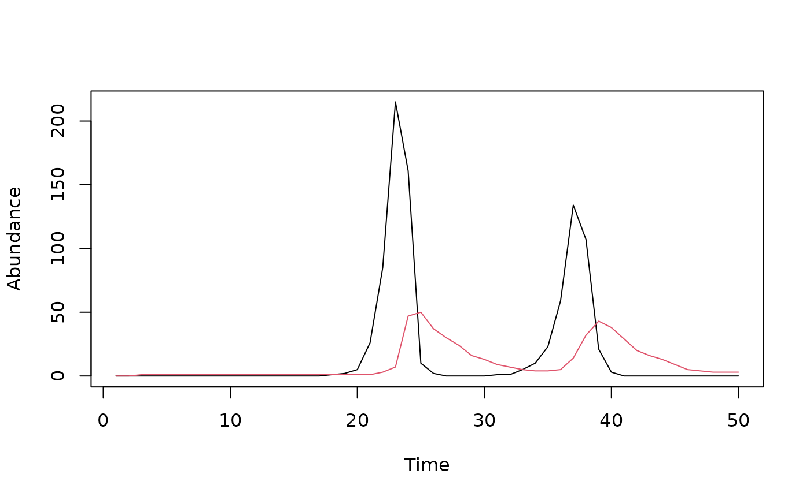
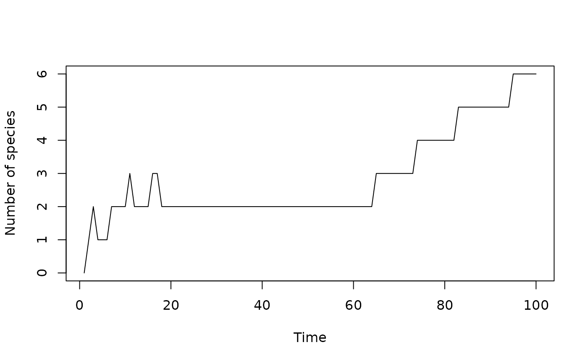

Simulation of an Assembly process from a Meta-web with stochastic Generalized Lotka-Volterra dynamics
Source:R/RcppExports.R
metaWebNetAssemblyGLV.RdSimulates the assembly of a local community from a regional meta-web where the local population
dynamics follow a stochastic generalized Lotka-Volterra (GLV) model with immigration.
In contrast to metaWebNetAssembly() and metaWebNetAssemblyCT(), species are not
present or absent by definition: populations are integer abundances, a species arrives through
immigration, and it is considered present while its abundance is greater than zero.
Extinctions, including secondary extinctions of consumers that lose their resources, are not imposed
by rules but emerge from the dynamics (demographic stochasticity and interactions).
Arguments
- metaW
Numeric square matrix with the interaction coefficients \(A_{ij}\) of the meta-web: the effect of species
jon the per capita growth rate of speciesi, inmetaW[i, j]. The values and the signs are the parameters of the GLV model, the diagonal is the self-limitation.- m
Numeric vector of length
nrow(metaW), immigration rate of each species, in individuals per unit of time. It is not a probability: a species withm > 0receives immigrants continuously, even when it is locally absent. Use 0 for species that should not migrate.- r
Numeric vector of length
nrow(metaW), intrinsic per capita growth rate of each species. It could be negative (e.g. consumers that need resources to persist).- ini
Numeric vector with the initial abundance of each species (length
nrow(metaW)), or a single value that is recycled to all species (e.g. 0 for an initially empty community). Values are truncated to integers.- time
Number of time points of the simulation. The initial condition is time point 1 and the state is recorded at each time unit, so the simulation covers
time - 1time units.- tau
Size of the integration step of the tau-leap method, in time units. Each time unit is divided in
1/tausteps, so1/taushould be an integer. Smaller values are more accurate but slower.
Value
S: integer vector of lengthtime, number of species present (abundance > 0) at each time point.L: integer vector of lengthtime, number of directed links at each time point, that is the number of non-zero interactions ofmetaWbetween present species; a predator-prey interaction counts as one link (from prey to predator), other interactions count in each direction in which they are non-zero.STime: integer matrix of dimensionnrow(metaW)xtimewith the abundance of each species (rows) at each time point (columns).A: logical adjacency matrix of the links in the last time point,A[i, j]isTRUEif there is a link fromitoj(for predator-prey from the prey to the predator).
Details
The abundance \(N_i\) of species \(i\) changes in time according to
$$\frac{dN_i}{dt} = N_i \left( r_i + \sum_j A_{ij} N_j \right) + m_i$$
where \(r_i\) is the intrinsic growth rate (r), \(A_{ij}\) the interaction matrix (metaW)
and \(m_i\) a constant immigration rate (m).
The model is integrated with the tau-leap method [1]: time is divided in steps of size tau,
and in each step the abundance of each species changes by a Poisson distributed number of individuals
with mean abs(rate) * tau, where rate is the right hand side of the equation above;
the change is positive if rate > 0 and negative otherwise. Abundances are truncated at zero.
Species are updated sequentially within a step, so a species uses the already updated abundances
of the species before it.
The signs of the interaction matrix define the type of interaction between species i and j:
metaW[i, j] < 0andmetaW[j, i] > 0: predator-prey,jis the predator andithe prey.metaW[i, j] > 0andmetaW[j, i] > 0: mutualism.metaW[i, j] < 0andmetaW[j, i] < 0: competition.metaW[i, j] != 0andmetaW[j, i] == 0: commensalism (if positive) or amensalism (if negative).metaW[i, i] < 0: self-limitation (density dependence). Without it, or without negative interactions, abundances can grow without bound.
Parameters of this kind of matrix can be generated at random with generateRandomGLVadjMat()
(structure) and generateGLVparmsFromAdj() (interaction strengths, r and m).
References
Gillespie, D. T. (2001). Approximate accelerated stochastic simulation of chemically reacting systems. Journal of Chemical Physics, 115(4), 1716–1733. https://doi.org/10.1063/1.1378322
See also
metaWebNetAssembly() and metaWebNetAssemblyCT() for models with presence/absence
dynamics, generateGLVparmsFromAdj() to generate the parameters.
Examples
# Predator-prey dynamics with immigration
A <- matrix(c(-0.001, -0.08,
0.01, 0 ), nrow = 2, byrow = TRUE)
set.seed(123)
out <- metaWebNetAssemblyGLV(A, m = c(0.1, 0.2), r = c(1.5, -0.25), ini = c(0, 0),
time = 50, tau = 0.1)
matplot(t(out$STime), type = "l", lty = 1, xlab = "Time", ylab = "Abundance")

out$S
#> [1] 0 0 1 1 1 1 1 1 1 1 1 1 1 1 1 1 1 2 2 2 2 2 2 2 2 2 1 1 1 1 2 2 2 2 2 2 2 2
#> [39] 2 2 1 1 1 1 1 1 1 1 1 1
# Random meta-web of 20 species, starting from an empty community
set.seed(1)
adj <- generateRandomGLVadjMat(20, 0.2, c(0.1, 0.3, 0.3, 0.15, 0.15))
parms <- generateGLVparmsFromAdj(adj, ef = 0.1, predIntAvg = 0.01, migrAvg = 0.01)
out <- metaWebNetAssemblyGLV(parms$interM, parms$m, parms$r, ini = 0, time = 100, tau = 0.1)
plot(out$S, type = "l", xlab = "Time", ylab = "Number of species")
